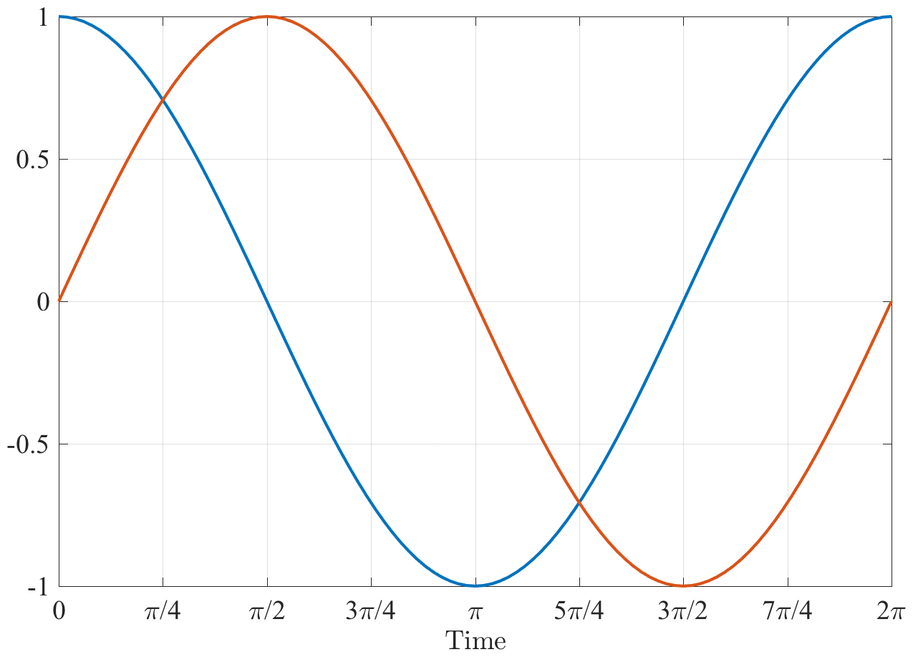
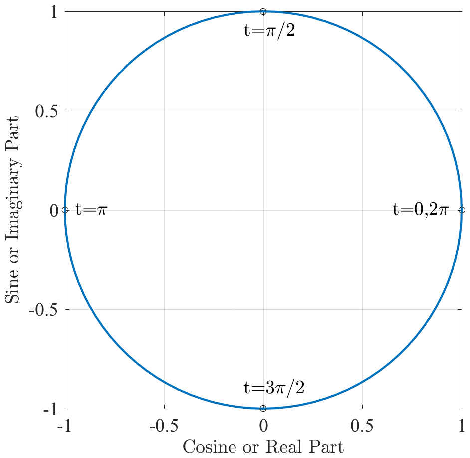
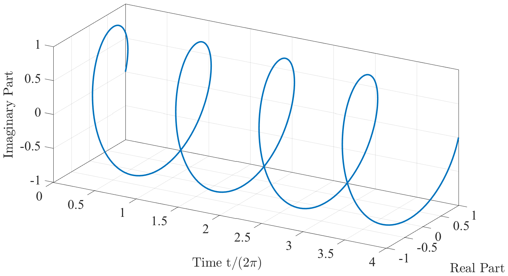
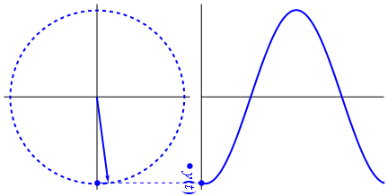
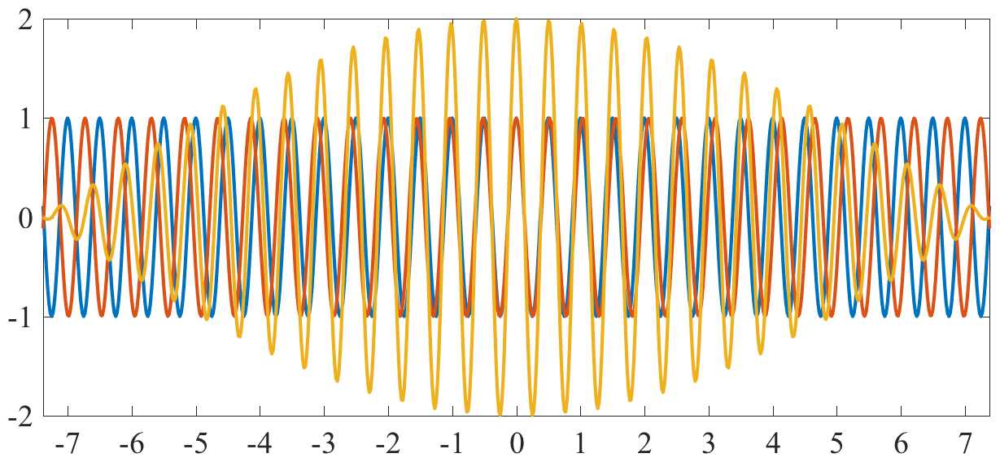
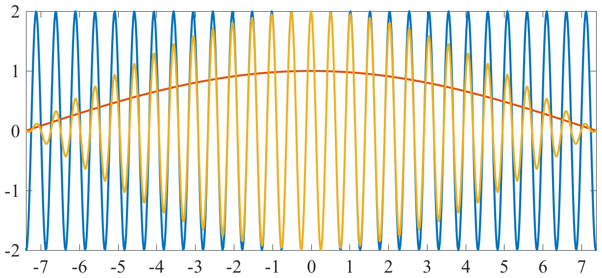

name: fourierbasics class: center,middle, .toc[[✧](../index.html)] .title[Frequency Basics] --- class: left, .toc[[✧](../index.html)] #Overview of This Lecture The essence of Fourier analysis is splitting up a time series into contributions from oscillatory components having different frequencies. That is, the time series is regarded as an aggregation of components of the form `$\cos(\omega t)$` and `$\sin(\omega t)$`. These naturally combine into the complex exponential `\[e^{i\omega t}=\cos(\omega t)+i\sin(\omega t).\]` Thus, it is essential to have a solid understanding of complex exponentials, `$e^{i\omega t}$`, before approaching Fourier analysis. --- class: center, .toc[[✧](../index.html)] #Review: Sinusoids Everybody please draw a cosine and a sine. Label all the important locations. --  --- class: center, .toc[[✧](../index.html)] # Complex Exponentials, 2D Now plot `$\cos(t)$` vs. `$\sin(t)$`. -- That's the same as `$ \cos(t) + i \sin( t) $`. <center> </center> --- class: center, .toc[[✧](../index.html)] # Complex Exponentials, 3D This is better seen in 3D as a *spiral* as time increases. `\[\cos(t) + i \sin( t) \]` <center> </center> Imagine that we are watching the tip of the velocity vector rotate in time. Because the velocity vector traces out a circle, this could be due to inertial oscillations (in the southern hemisphere!) --- class: left, .toc[[✧](../index.html)] #Review: Some Derivatives Everyone please write down the derivatives of `$\cos(t)$` and `$\sin(t)$`. -- Q: Does this match your drawing? --- class: left, .toc[[✧](../index.html)] # In-class assignments We're going to need to brush up on some mathematics (sorry). Please do your best on these assignments in a notebook, using only what you currently know (i.e. no Googling). We'll take 15 minutes. 2. If `$f=1/10$` in `$\cos(2\pi f t)$`, what is the period? 2. If `$\omega=1/10$` in `$\cos(\omega t)$`, what is the period? 2. What is `$\frac{d}{dt}\cos(\omega t)$`? What is `$\frac{d^2}{dt^2}\cos(\omega t)$`? 2. In `$(a^2)^3=a^x$`, what is `$x$`? In `$a^2a^3=a^x$`, what is `$x$`? 1. Recalling `$e^{i \pi} =-1$` with `$i\equiv\sqrt{-1}$`, what is `$e^{i \pi/2}$`? And `$e^{i \pi/4}$`? 1. Draw `$1+3i$` and its complex conjugate as vectors (i.e. arrows). 1. What action does conjugation have on a vector, say `$u+iv$`? 1. Carry out the matrix multiplications `\[\begin{bmatrix} 1 & 0\\ 0& 1 \end{bmatrix}\begin{bmatrix} u \\ v \end{bmatrix}, \quad\quad\begin{bmatrix} 0 & -1\\ 1& 0 \end{bmatrix}\begin{bmatrix} u \\ v \end{bmatrix},\quad\quad\begin{bmatrix} \cos\theta& -\sin\theta\\ \sin\theta& \cos \theta \end{bmatrix}\begin{bmatrix} u \\v \end{bmatrix}.\]` 2. Write `$\cos(A+B)$` in terms of `$\cos(A)$`, `$\cos(B)$`, `$\sin(A)$`, and `$\sin(B)$`. --- class: center, .toc[[✧](../index.html)] # The Fourier Transform The *discrete Fourier transform* lets us represent a discrete time series `$z_n$` as a sum of complex exponentials. `\[ z_n = \frac{1}{N}\sum_{m=0}^{N-1} Z_m e^{i2\pi m n/N}, \quad\quad\quad n=0,1,\ldots N-1 \]` <img style="width:45%" src="../figures/sinesandcosines.png"> To understand this, we are going to review some basics about frequency, sinusoids, complex numbers, and complex exponentials. --- class: left, .toc[[✧](../index.html)] # About Frequency `\[ \cos(2 \pi f t)\quad\quad vs. \quad\quad \cos(\omega t) \]` There are two types of frequencies. `$f$` is called the *cyclic* frequency. Its units are cycles/time. Example: Hz = cycles/sec. `$\omega$` is called the *radian* or *angular* frequency. Its units are rad/time. The *period* is `$P=1/f=2\pi/\omega$`. As `$t$` goes from 0 to `$1/f$`, `$2 \pi f t$` goes from zero to `$2\pi$`. As `$t$` goes from 0 to `$2\pi/\omega$`, `$\omega t$` goes from zero to `$2\pi$`. A very common error in Fourier analysis is mixing up cyclic and radian frequencies! Note: neither “cycles” nor “radians” actually have any units, thus both `$f$` and `$\omega$` have units of 1/time. However, specifying for example 'cycles per day' or 'radians per day' helps to avoid confusion. --- class: left, .toc[[✧](../index.html)] # More About Frequency `\[ \cos(2 \pi f t)\quad\quad vs. \quad\quad \cos(\omega t) \]` Which is preferred? We will use both. The *cyclic* frequency `$f$` is more convenient for numerical implementation, and is easier to quote numeric values in. The *radian* frequency `$\omega$` is more convenient notationally, especially for continuous time, and is also is more physical. Consider the equation for a simple harmonic oscillator: `\[ \frac{d^2}{dt^2} x + (2\pi f)^2 x = F\quad\quad vs. \quad\quad \frac{d^2}{dt^2} x + \omega^2 x = F\]` Which one is more intuitive? Both types of frequency are in widespread use, so it is good to be familiar with both. --- class: left, .toc[[✧](../index.html)] #Review: Complex Numbers It makes life a lot easier, in working with Fourier transforms, if one is comfortable with complex numbers. The easiest way to think about complex numbers is that they are an alternate way of representing a vector having two elements. `\[u+iv \quad\Longleftrightarrow\quad \begin{bmatrix} u \\v \end{bmatrix}\]` Both are instructions for locating a point in two dimensions. The real part `$u$` gives the “x”-location or “east-west” part, and the imaginary part `$v$` gives the “y”-location or “north-south” part. -- Conjugation is equivalent to flipping the vector about the `$x$`-axis. `\[(u+iv)^* = u-iv \quad\Longleftrightarrow\quad \begin{bmatrix} u \\-v \end{bmatrix}\]` --- class: left, .toc[[✧](../index.html)] #The Cardinal Directions Any complex number can be written as a magnitude and a phase, `$u+iv = Ae^{i\theta}$` with `$A=\sqrt{u^2+v^2}$`, where `$\theta$` sets the *orientation*. The values `$\pm 1$` and `$\pm i$` of `$e^{i\theta}$` correspond to the *cardinal directions*. `\[ \begin{array}{ccc} & \mathrm{(North)}& \\ & e^{i\pi/2}=i& \\ \mathrm{(West)}\quad e^{i\pi}=-1 & ☼ &e^{i0} =e^{i2\pi}=1\quad \mathrm{(East)} \\ & e^{-i\pi/2}= -i& \\ & \mathrm{(South)}& \\ \end{array}\]` Important notes! In mathematical convention, an angle of zero degrees corresponds to east, not north! The angle increases as one proceeds in a counterclockwise, not clockwise, direction! Can't we all just get along? <!--These can be derived from Euler's formula `$e^{i\theta}=\cos\theta +i \sin\theta.$`--> --- class: left, .toc[[✧](../index.html)] #Complex Rotations Recall that multiplying a complex number $z$ by `$e^{i\theta}$` is equivalent to a rotation through angle `$\theta$`. In complex notation, rotating $z=u+iv$ counterclockwise through angle $\theta$ is accomplished by `\begin{multline}e^{i\theta}z=e^{i\theta}(u+iv) = (\cos\theta + i \sin\theta)(u+iv)\\ = \left(u\,\cos\theta-v \,\sin\theta \right) +i\left(u\,\sin\theta+v\,\cos\theta \right)\end{multline}` while in matrix notation, rotating the vector `$\mathbf{z}=[u \,\,\,v]^T,$` where “`$T$`” denotes the transpose, is accomplished by `\[\begin{bmatrix} \cos\theta & -\sin\theta \\ \sin \theta & \cos \theta \end{bmatrix}\mathbf{z}=\begin{bmatrix} \cos\theta & -\sin\theta \\ \sin \theta & \cos \theta \end{bmatrix}\begin{bmatrix} u \\v \end{bmatrix}=\begin{bmatrix} u\,\cos\theta-v \,\sin\theta\\ u\,\sin\theta+v\,\cos\theta\end{bmatrix}.\]` The ease of carrying out rotations is one of the advantages of complex notation. --- class: left, .toc[[✧](../index.html)] #Complex Time Series When we have an east-west and a north-south time series, such as `$u$` and `$v$` velocities, it is convenient to group these into one complex-valued time series as `\[z(t)\equiv u(t)+iv(t).\]` Conversely, when we have a complex-valued time series, we can interpret this as meaning that we have an east-west portion, in the real-valued part, grouped together with a north-south portion, in the imaginary part. <!--%\Re\{z(t)\}=\Im\{z(t)\}--> --- class: left, .toc[[✧](../index.html)] #The Phasor This brings us to the first fundamental building block of Fourier analysis, a complex exponential in time with a constant frequency, `\[ e^{i\omega t}. \]` This quantity is so fundamental, it has its own name: a *phasor*. The name is short for “phase vector”. As will be discussed further shortly, the real and imaginary parts of a phasor are a cosine and sine, a result known as *Euler's formula*: `\[ e^{i\omega t} = \cos(\omega t) + i \sin(\omega t). \]` Thus, if we think of `$z(t)=e^{i\omega t}$` as being a velocity, then `\[u(t)=\cos (\omega t),\quad\quad\quad v(t)=\sin (\omega t)\]` such that the real or east-west part oscillates as a cosine, while the imaginary or north-south part oscillates as a sine. --- class: left, .toc[[✧](../index.html)] #Visualizing a Phasor  Here we see how the `$y$`-component of the phasor `$e^{i\omega t}$` is traced out as time increases, generating a sinusoid. This [{animation}](https://upload.wikimedia.org/wikipedia/commons/8/89/Unfasor.gif) is from Wikipedia, by Gonfer, redistributed under the [{CC BY-SA 3.0}](https://creativecommons.org/licenses/by-sa/3.0) license, and rotated by me. --- class: left, .toc[[✧](../index.html)] #Sum of Opposing Phasors Consider two oppositely-rotating phasors at the same frequency, `$e^{i\omega t}$` and `$e^{-i\omega t}$`. We can think of these as representing a positively-rotating current, and a negatively rotating current, respectively. What happens if both of these are happening at the same time? Then we need to sum them. Let's look at what happens as we change the amplitude of the second phasor, i.e. we're plotting `\[ e^{i\omega t+i\pi/2} + A e^{-i\omega t+i\pi/2} \]` as we vary `$A$` from zero to one and back down to zero. The `$+i\pi/2$` sets the value of the phasors to `$+i$`, or northward, at time `$t=0$.` --- class: left, .toc[[✧](../index.html)] #Sum of Opposite Phasors <video preload="auto" width="100%" height="auto" data-setup="{}" autoplay loop controls><source src="../figures/phasorsummovie.mp4" type="video/mp4" /></video> --- class: left, .toc[[✧](../index.html)] #Sum of Opposing Phasors Grouping Euler's formula together with its conjugate `\[ e^{i\omega t} = \cos(\omega t) + i \sin(\omega t),\quad\quad e^{-i\omega t} = \cos(\omega t) - i \sin(\omega t) \]` we can add and subtract to obtain well-known formulas giving the cosine and sine in terms of the complex exponential, `\[ \cos(\omega t) =\frac{1}{2}\left[ e^{i\omega t} + e^{-i\omega t} \right],\quad\quad \sin(\omega t)=-i\frac{1}{2}\left[ e^{i\omega t} - e^{-i\omega t} \right].\]` What happens if we add a phase offset, so that at time `$t=t_o$` the vectors are both pointing east, rather than at `$t=0$`? We the find `\[ \frac{1}{2}\left[ e^{i\omega (t-t_o)} + e^{-i\omega (t-t_o)} \right]= e^{-i\omega t_o}\frac{1}{2}\left[ e^{i\omega t} + e^{-i\omega t} \right]=e^{-i\omega t_o}\cos(\omega t)\]` which is a rotation in physical space. Similarly, a *phase shift* between the two rotary components will change the phase of the resulting sinusoid. <!--`\[ \frac{1}{2}\left[ e^{i\omega t+i\theta/2} + e^{-i\omega t-i\theta/2} \right],\quad\quad\sin(\omega t)=-i\frac{1}{2}\left[ e^{i\omega t} - e^{-i\omega t} \right]\]`--> --- class: left, .toc[[✧](../index.html)] #Computational Notes It's worthwhile also mentioning aspects of how to work with complex numbers in Matlab. If we write a complex number in terms of an amplitude and a phase as `\[ z(t)=u(t)+iv(t) =A(t)e^{i\phi(t)}\]` then `$A(t)$` can be recovered with <tt>abs(z)</tt>, while `$\phi(t)$` can be recovered with <tt>angle(z)</tt>. If you plot a complex-valed quantity using <tt>plot</tt>, Matlab will plot the real and imaginary parts against each other. This can be very confusing, as very small imaginary parts occasionally arise unexpectedly due to numerical noise (such as when taking roots). Use <tt>uvplot</tt> to plot the real and imaginary parts as time series. Also, be aware that transposing a vector in Matlab, as in “ `$z'$` ”, also conjugates it! The “prime” notation implements a conjugate transpose. An odd choice if you ask me. --- class: left, .toc[[✧](../index.html)] # Euler's Formula A complex exponential can be written as the sum of a cosinusoid, in its real part, and a sinusoid, in its imaginary part. `\[ e^{i\omega t} = \cos(\omega t) + i \sin(\omega t) \]` This result is known as Euler's Formula. Q: Is this obvious? -- A: No, not at all. Exponentiation with an imaginary argument on the left-hand-side, and sines and cosines on the right-hand side!? This result is so commonly used today that it is easy to forget that it is not obviously true. <!--We will now go on a little side journey to understand this important formula, and to see for ourselves why it is true.--> --- class: left, .toc[[✧](../index.html)] # Historical Interlude The special case `$\omega t=\pi$` is known as *Euler's Identity* `\[ e^{i\omega t} = \cos(\omega t) + i \sin(\omega t)\\ e^{i\pi} + 1 = 0 \]` It relates the five most important numbers in mathematics—0, 1, `$e,$` `$\pi,$` and `$i$`— and is frequently considered “the most remarkable formula in mathematics” (Feynman). It is not at all obvious, and was narrowly missed by many great mathematicians, including Euler himself. “By 1729, we have four different people, DeMoivre, Cotes, Bernoulli and Euler (twice), who have found the essential fact behind the Euler identity, but none of them have recognized its importance or written it in anything like the form we recognize today.” [ —Sandifer (2007)](http://eulerarchive.maa.org/hedi/HEDI-2007-08.pdf) --- class: left, .toc[[✧](../index.html)] #Using Euler's Formula From Euler's formula one can immediately derive many useful formulas regarding trigonometric functions. -- Example: prove the sum-angle formulas `\begin{eqnarray} \cos(A+B) &=& \cos(A)\cos(B)-\sin(A)\sin(B) \\ \sin(A+B) &=& \cos(A)\sin(B)+\sin(A)\cos(B) \end{eqnarray}` -- `\[e^{i (A+B)} =e^{i A}e^{i B}\]` -- `\[ \cos(A+B) +i \sin(A+B) = \left[\cos(A) +i \sin (A)\right]\left[\cos(B) +i \sin (B)\right] \]` -- With `$A=B$` we have the double-angle formulas `\[\cos(2x)=\cos^2(x)-\sin^2(x),\quad\quad \quad \sin(2x)= 2\cos(x)\sin(x). \]` <!--Example: prove de Moivre's formula `\[ \cos(nx)+i\sin(nx)=[\cos(x) + i\sin x]^n. \]` Proof: `$e^{inx}=\left(e^{ix}\right)^n$`. --> --- class: center, .toc[[✧](../index.html)] #Sum of Two Sinusoids Q: What happens if you add sinusoids with different frequencies? --  A: You get some periods of *constructive interference*, and other periods of *destructive interference.* This phenomenon is sometimes called *beating*. -- Q: Can you think of examples of beating in everyday life? --- class: center, .toc[[✧](../index.html)] #Product of Sinusoids Q: What happens if you *multiply* two sinusoids? --  A: You get a sinusoid with a changing or *modulated* amplitude— just as in the case of *adding* two sinusoids. -- In fact, adding two sinusoids is *the same as* multiplying two others, with particular choices of the frequencies. --- class: left, .toc[[✧](../index.html)] #Derivation of Beating The sum of two cosines is twice the product of a cosine with their *average* frequency and one with their *half-difference* frequency: `\[\cos(\omega_1 t)+\cos(\omega_2 t)=2\cos\left(\frac{1}{2}(\omega_1+\omega_2)t\right)\cos\left(\frac{1}{2}(\omega_1-\omega_2)t\right). \]` This “beating equation” can be derived as follows. Beginning with the sum-angle theorem, we *change the sign* of `$B$` `\begin{eqnarray} \cos(A+B) &=& \cos(A)\cos(B)-\sin(A)\sin(B) \\ \cos(A-B) &=& \cos(A)\cos(B)+\sin(A)\sin(B) \end{eqnarray}` and then add these two equations to obtain the *product formula* `\[\frac{1}{2}\left[\cos(A+B)+\cos(A-B)\right] =\cos(A)\cos(B).\]` With `$\omega_1 t=A+B$` and `$\omega_2 t=A-B$`, we obtain the beating equation. --- class: left, .toc[[✧](../index.html)] #The Fortnightly Tide The example of beating presented here was for two components of the semidiurnal tide. The period of the *solar semidiurnal* tide S2 is `$2\pi/\omega_1=12.000$` hrs. The period of the *lunar semidiurnal* tide M2 is `$2\pi/\omega_2=12.421$` hrs. The period of the difference between these two frequencies is `$2\pi/(\omega_2-\omega_1)=14.77$` days, or about two weeks. The beating of these two tidal components generates two-week oscillations in tidal amplitude known as the *fortnightly tide*. The fortnightly tide is *not* primarily due to a separate forcing with a 14 day period! It is primarily due to the *interaction* of two semidiurnal forcing components with slightly different frequencies. --- class: left, .toc[[✧](../index.html)] #Summary This lecture focused on understanding the meaning of the fundamental building block of Fourier analysis, the *phasor* `\[e^{i\omega t}.\]` -- • We understand that the complex exponential is built up of cosines (in its real part) and sinusoids (in its imaginary part). -- • As `$t$` increases for positive `$\omega$`, `$e^{i\omega t}$` draws a *circle*, traversed in the mathematically positive (counterclockwise) direction. -- • We appreciated the distinction between the use of radian and cyclic frequencies, i.e. `$e^{i\omega t}$` vs. `$e^{i2\pi f t}$`. -- • We saw that two oppositely-rotating phasors with the same frequency sum, in general, to an ellipse. <!--If their magnitude is the same, their sum is a linear oscillation.--> -- • We understood the phenomenon of *beating* as an elementary consequence of summing two sinusoids. --- class: left, .toc[[✧](../index.html)] #In-Class Assignments 1. Write down the eight points of the compass (East, Northeast, North, etc.) as complex numbers. 1. Work through the algebra for yourself proving the sum formulas (below) from Euler's formula. `\begin{equation} \cos(A\pm B) = \cos(A)\cos(B)\mp\sin(A)\sin(B) \end{equation}` 1. Work through the algebra for rotation by an angle `$\theta$` in both complex-valued and matrix notation, see p. 13. 1. Work through the algebra proving the product formula `\begin{equation} \cos(A)\cos(B) = \frac{1}{2}\left[\cos(A+B)+\cos(A-B)\right] \end{equation}` 1. Find for yourself the right-hand side of the product formula `\begin{equation} \sin(A)\sin(B) = ...? \end{equation}` --- class: left, .toc[[✧](../index.html)] #Homework Let's try to understand Euler's formula a bit more. <!--`\[ e^{i\omega t} = \cos(\omega t) + i \sin(\omega t) \]`--> 1. Take the first, second, and third derivative with respect to `$t$` of the right-hand side, and also of the left-hand side. Verify that these agree. 2. What is the general `$n$`th-order derivative for the left-hand side, and for the right-hand side? 3. Use this information to find the Taylor series expansions of the two sides, and show that they are identical. --- class: left, .toc[[✧](../index.html)] #Homework Let's play around a little bit in Matlab or Python. Add together two complex exponentials with opposite frequencies `\[ z(t) = P e^{i\phi } e^{i\omega t} + N e^{i\phi } e^{-i\omega t} \]` What happens as we vary the amplitudes `$P$` and `$N$` and the phase `$\phi$`? Construct the following complex-valued time series for particular choices of the parameters `\[ z(t) = e^{i\theta} \left[a \cos \omega t + i b \sin\omega t\right] \]` What happens when you vary a, b, and `$\theta$`? What kind of signal is this? In both of these cases, make plots on the complex plane (plotting the real and imaginary parts against each other) in addition to time series plots. Make sure to set the plot aspect ratio to 1:1! <!--Extra “credit”: Explore numerically in Matlab the behavior of the Taylor expansions of `$\cos(x)$` and `$\sin(x)$`, p. 16, if you include 5, 10, 20, and 50 terms in the summation.--> <!---2. nalytically find the radius of convergence of the Taylor expansions of `$\cos(x),$` `$\sin(x),$` and `$e^{ix}$`. -->